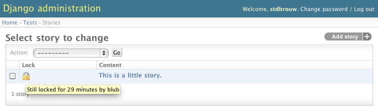

Concurrency control with django-locking¶
django-locking makes sure no two users can edit the same content at the same time, preventing annoying overwrites and lost time. Find the repository and download the code at http://github.com/stdbrouw/django-locking
The low-down¶
Django has seen great adoption in the content management sphere, especially among the newspaper crowd. One of the trickier things to get right, is to make sure that nobody steps on each others toes while editing and modifying existing content. Newspaper editors might not always be aware of what other editors are up to, and this goes double for distributed teams. When different people work on the same content, the one who saves last will win the day, while the other edits are overwritten.
django-locking provides a system that makes concurrent editing impossible, and informs users of what other users are working on and for how long that content will remain locked. Users can still read locked content, but cannot modify or save it.
django-locking interfaces with the django admin application, but also provides an API that you can use in applications of your own.
Table of contents¶
You should take a look at this page first, as it’ll answer most of your questions, but here’s the TOC to the entire documentation:
Notes¶
Looking for something else?¶
Do note that, in the context of this application, ‘locking’ means preventing concurrent editing. You might also know this by the term ‘mutex’ or the more colloquial ‘checkouts’. If you ended up here while looking for an application that provides permission-based access to certain content, read up on row-level permissions and granular permissions. Also check out django-lock, django-granular-permissions and similar apps.
Beta!¶
While django-locking has seen a little production use and has a fair amount of unit-tests, please be advised that at this moment it is still beta-quality software. However, I’m quite responsive when it comes to the GitHub issue tracker, and you should also feel free to contact me more directly, either through GitHub or by e-mailing.
Features¶
- admin integration
- django-locking tells you right from the start if content is locked, rather than when you try to save and override somebody else’s content
- lock expiration: leaving a browser window open doesn’t lock up content indefinitely
- other users can still view locked content, they just can’t edit the stuff somebody else is working on
- configurable: you can define the amount of minutes before the app auto-expires content locks
- users receive an alert when a lock is about to expire
Some other things you might like to know about:
- a choice between soft locks (only enforced at the front-end level) and hard locks (enforced at the ORM level – raising an error when trying to save a locked object). (See Design considerations)
- A public API for coders who want to integrate their apps with django-locking. See Developers’ documentation and The public API.
- well-documented
- well-tested
- verbose (i.e. a lot of logging to sys.stdout), so you can see what’s going on behind the screen
For other stuff on the roadmap, see Roadmap.
Installation¶
- This app will not be available on PyPI until version 0.3 at the earliest. In the meanwhile, just download the package and install it using python setup.py install.
- Add locking to your INSTALLED_APPS in the settings.py to your project.
- You may optionally specify a LOCK_TIMEOUT in settings.py, which should be in seconds. It defaults to half an hour (1800 seconds).
- Configure your development environment for file serving using django-staticfiles. See the documentation here.
- Add (r'^ajax/admin/', include('locking.urls')) to your urlconf (urls.py). You may use any base url, ajax/admin/ is just an example.
- Specify locking.models.LockableModel as a base class for any model that requires locking. If you’re doing this on an existing model, be aware that syncdb won’t work – you’ll either need South or do the migration manually. (syncdb doesn’t add new fields to any existing table.)
- To enable locking in the admin interface, specify locking.admin.LockableAdmin as the base class for your own ModelAdmins.
Want to know more about the public API? The public API
Something not working? Contact the author or open an issue on GitHub.
Usage¶
Once you’ve installed django-locking and have one or a few models that have locking.models.LockableModel as a base class, and ModelAdmins that have locking.admin.LockableAdmin as a base class, you’re good to go.

django-locking enables locking in the admin by disabling all input fields. That way, any user can still read locked content, they just can’t edit it.
- A lock icon indicates locked content in the list edit screen
- A red warning message indicates locked content on the edit page itself.
- Five minutes before the lock times out, users will receive a javascript alert with a message warning them to save their content before they lose their edit lock.
Advanced usage¶
- By default, django-locking uses soft locks. Read more about different methods of locking over at Design considerations.
- When integrating with your own applications, you should take care when overriding certain methods, specifically LockableModel.save, LockableAdmin.changelist_view and LockableAdmin.save_model, as well as any of the methods that come with django-locking itself (see The public API). Make sure to call super if you want to maintain the default behavior of django-locking.
Learn more about best practices when using super here. Chiefly, do not assume that subclasses won’t need or superclasses won’t pass any extra arguments. You will want your overrides to look like this:
def save(*vargs, **kwargs):
super(self.__class__, self).save(*vargs, **kwargs)